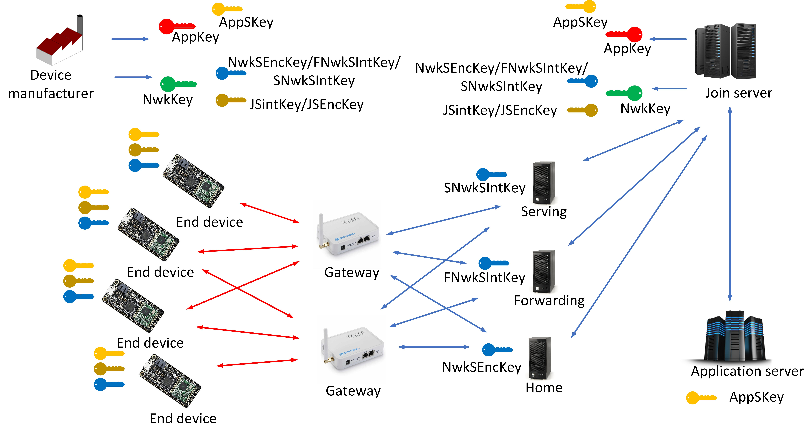
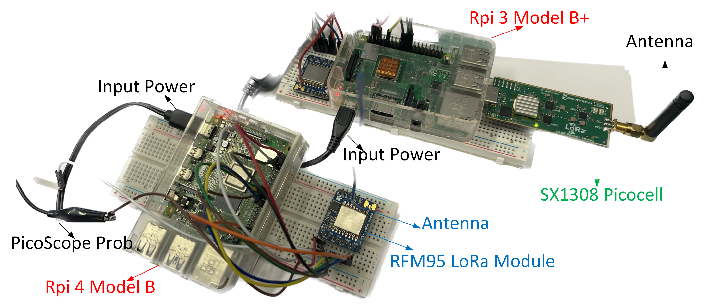
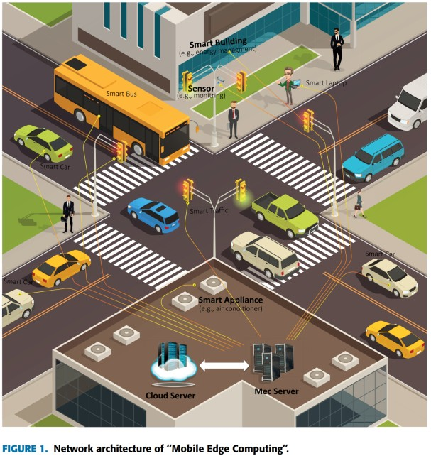
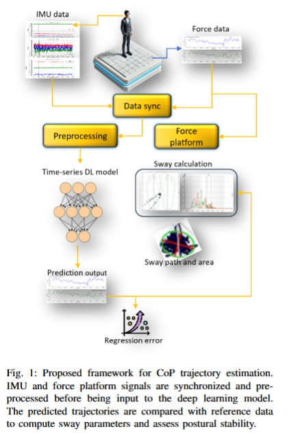

Deep Learning for Postural Balance Evaluation

This diagram illustrates our approach for evaluating postural balance using smart glasses (IMU) and a force platform. IMU data is preprocessed and used to train deep learning models for force estimation. The system calculates sway parameters, enabling a comparison with ground-truth force platform measurements for clinical assessment and monitoring. View Paper
Mitigating Cyber Attacks in LoRaWAN
 This diagram illustrates our approach for evaluating postural balance using smart glasses (IMU) and a force platform. IMU data is preprocessed and used to train deep learning models for force estimation. The system calculates sway parameters, enabling a comparison with ground-truth force platform measurements for clinical assessment and monitoring. View Paper
Mitigating Cyber Attacks in LoRaWAN
This diagram illustrates our approach for evaluating postural balance using smart glasses (IMU) and a force platform. IMU data is preprocessed and used to train deep learning models for force estimation. The system calculates sway parameters, enabling a comparison with ground-truth force platform measurements for clinical assessment and monitoring. View Paper
Deep Learning for Postural Balance Evaluation
This diagram illustrates our approach for evaluating postural balance using smart glasses (IMU) and a force platform. IMU data is preprocessed and used to train deep learning models for force estimation. The system calculates sway parameters, enabling a comparison with ground-truth force platform measurements for clinical assessment and monitoring. View Paper
Mitigating Cyber Attacks in LoRaWAN
This diagram illustrates our approach for evaluating postural balance using smart glasses (IMU) and a force platform. IMU data is preprocessed and used to train deep learning models for force estimation. The system calculates sway parameters, enabling a comparison with ground-truth force platform measurements for clinical assessment and monitoring. View Paper
Mitigating Cyber Attacks in LoRaWAN

This diagram illustrates our approach for evaluating postural balance using smart glasses (IMU) and a force platform. IMU data is preprocessed and used to train deep learning models for force estimation. The system calculates sway parameters, enabling a comparison with ground-truth force platform measurements for clinical assessment and monitoring. View Paper
Public Code & Tools
I maintain several open-source repositories related to wearable sensing, IoT security, LoRaWAN analysis, and deep learning for biomedical applications. Selected tools and models developed during my Ph.D. and postdoctoral work are listed below.
Deep Learning Models for IMU → CoP Prediction
- LSTM, GRU, CNN–BiLSTM, and TCN–Attention neural architectures
- Dataset preprocessing pipelines for multi-sensor IMU recordings
- Explainable AI tools (Attention, SHAP, IG, fidelity masking)
LoRaWAN Security & Lightweight Cryptography
- Lightweight key-management scheme using AES-128, ECDH, and Argon2
- Scyther verification models for proving protocol security
- LoRaWAN packet analysis scripts for vulnerability testing
5G & Edge Computing Toolkit
- Secure NFV deployment templates for industrial IoT
- Edge-client data flow analysis tools (5G-INDUCE project)
- Latency-profiling scripts for virtualized functions
Underwater Wireless Sensor Networks (UWSNs)
- Simulation models for delay-minimization routing
- Energy-aware cooperative communication algorithms
GitHub Repositories
Below is an automatically generated list of my latest public GitHub projects: